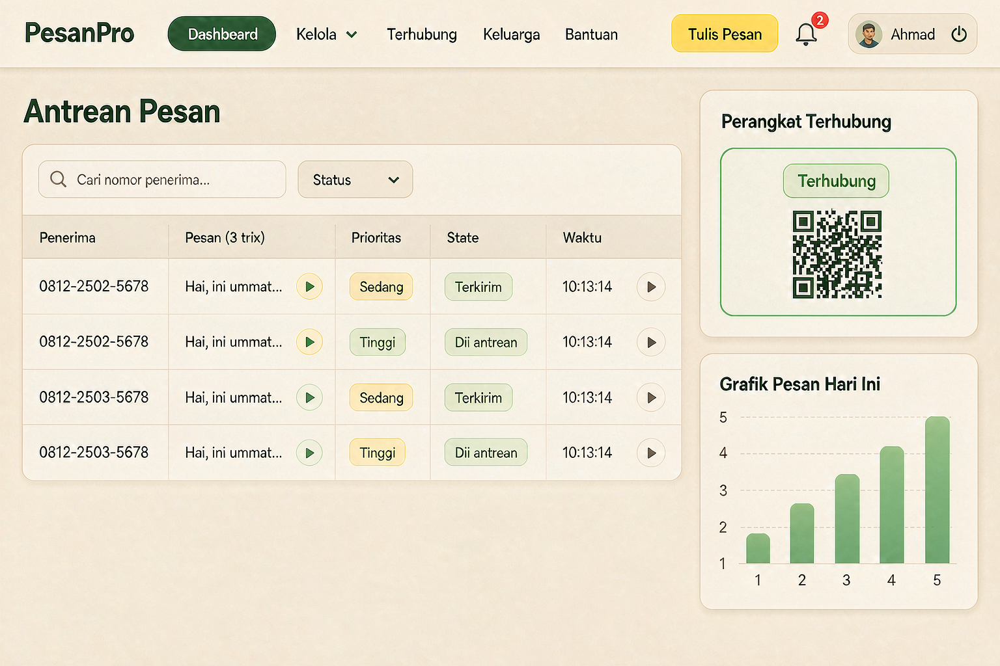
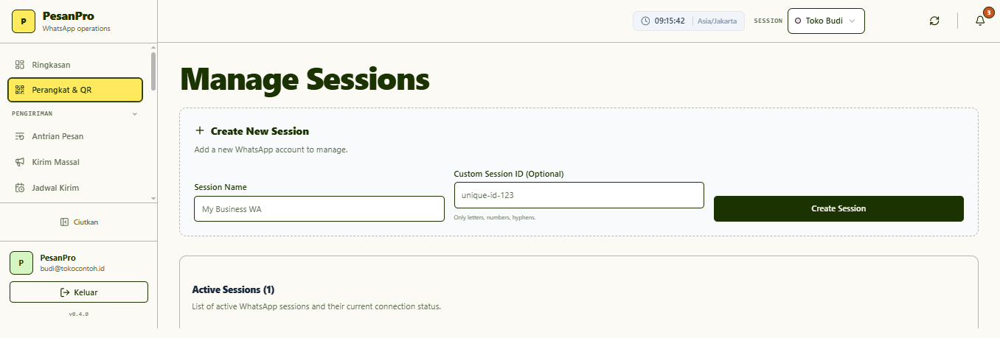
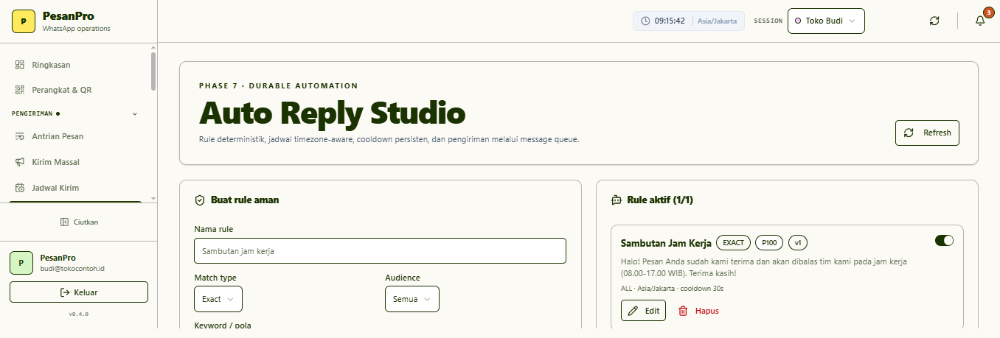
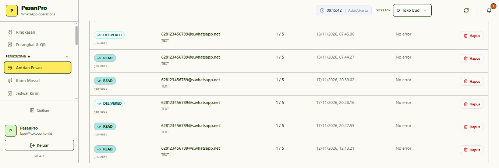
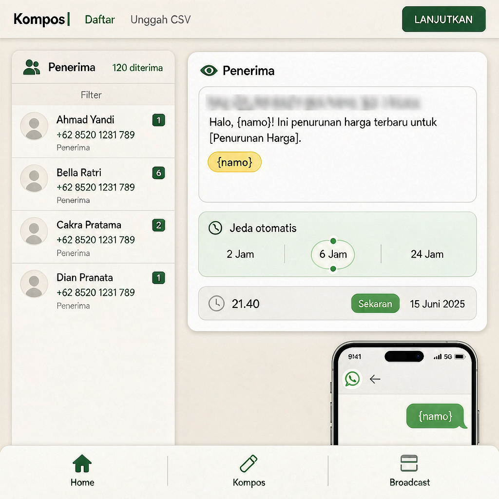

Pertanyaan harga yang sama dijawab ulang tiap hari. Notifikasi resi disalin manual satu per satu. Broadcast diketik nomor demi nomor sampai malam. Semua itu makan waktu Anda yang seharusnya dipakai jualan.
PesanPro memindahkan pekerjaan itu ke satu dashboard: notifikasi otomatis lewat API, broadcast berjeda, dan balasan langsung lewat kata kunci. Anda tetap jualan, sistem yang mengetik.
Daftar dan hubungkan WhatsAppPembayaran lewat transfer bank dan diverifikasi admin. Tanpa kartu kredit.

pengguna internet Indonesia (usia 16+) memakai WhatsApp dalam satu bulan terakhir
Sumber: DataReportal, Digital 2026: Indonesia
orang Indonesia terhubung internet, atau 80,66% populasi
Sumber: APJII, Survei Profil Internet Indonesia 2025
menyebut WhatsApp platform favorit mereka, tertinggi di atas TikTok (22,6%)
Sumber: DataReportal, Digital 2026: Indonesia
Artinya: pelanggan Anda memang ada di WhatsApp. Yang menentukan penjualan adalah seberapa cepat chat itu dijawab.
Jam 8 pagi, pesanan pertama masuk. Anda ketik konfirmasi, salin nomor resi, kirim. Jam 10, ada yang tanya stok. Pertanyaan yang sama dengan yang masuk jam 9 kemarin, dan jam 9 seminggu lalu. Anda ketik ulang jawaban yang sama, untuk kesekian kalinya.
Jam 1 siang, Anda sedang mengantar barang ke kurir. Ponsel bergetar lima kali. Anda tahu itu pelanggan yang menunggu jawaban. Anda juga tahu sebagian dari mereka bisa saja membuka toko pesaing sambil menunggu.
Jam 9 malam, keluarga sudah di meja makan. Layar menyala: "Kak, masih buka tidak?". Membalas berarti kembali bekerja. Tidak membalas berarti menonton chat itu terbaca, tanpa jawaban, sampai besok pagi.
Dan Anda tidak akan pernah tahu berapa banyak orang yang tidak mengetik apa-apa. Mereka membandingkan toko Anda dengan toko lain di tab bersebelahan, memilih yang membalas lebih dulu, lalu pergi tanpa meninggalkan jejak.
Ini bukan soal kerja keras. Anda sudah bekerja keras. Masalahnya, satu nomor WhatsApp tidak dirancang untuk menggantikan tiga pekerjaan sekaligus: layanan pelanggan, pengirim notifikasi, dan mesin pemasaran ulang. Ketiga pekerjaan itu tetap harus jalan. Pertanyaannya cuma satu: diketik oleh tangan Anda, atau dijalankan sistem?
Tidak perlu percaya klaim siapa pun, termasuk halaman ini. Masukkan dua angka dari pengalaman Anda sendiri, dan lihat berapa jam yang hilang tiap bulan hanya untuk mengetik ulang.
Perkiraan waktu mengetik chat per bulan (26 hari kerja):
0 jam
Setara 0 hari kerja penuh (8 jam per hari).
Ini hitungan aritmetika sederhana dari isian Anda sendiri, bukan hasil riset. Gunakan sebagai gambaran kasar, bukan janji. Yang jelas: waktu ini berulang setiap bulan selama pembalasan masih manual.
Hasil perhitungan akan muncul di sini setelah Anda mengisi dua angka di sebelah kiri dan menekan tombol hitung.
PesanPro adalah WhatsApp gateway. Satu dashboard yang menjalankan pekerjaan WhatsApp bisnis Anda secara otomatis, tanpa Anda mengetik semuanya.
Caranya sederhana. Anda memindai QR dari ponsel (seperti saat login WhatsApp Web), lalu menyetel aturannya sekali. Setelah itu:
Notifikasi resi dan status pesanan terkirim sendiri begitu sistem toko Anda memanggil API.
Pertanyaan "harga", "stok", "jam buka" dijawab langsung lewat kata kunci, termasuk di luar jam kerja.
Daftar 500 sampai 3.000 penerima menerima broadcast yang sama, dengan jeda otomatis yang menjaga ritme kirim.
Sekali disetel, berulang setiap hari. Tangan Anda kembali ke pekerjaan yang benar-benar menambah penjualan.

Langkah 1: hubungkan perangkat WhatsApp

Langkah 2: setel balasan otomatis sekali saja

Langkah 3: kirim dan pantau sampai dibaca
Semua di bawah ini sudah jalan di PesanPro hari ini, bukan jadwal rilis. Yang paling banyak menghemat waktu ada di urutan pertama.
Satu pesan untuk seluruh daftar penerima. Impor nomor dari CSV, sisipkan variabel seperti {nama} supaya tiap orang menerima versi namanya sendiri, dan gunakan spintax supaya isi pesan bervariasi.
Sistem menjaga ritme kirim dengan jeda antar pesan. Broadcast 500 sampai 3.000 penerima per batch berjalan tanpa Anda menekan kirim satu per satu.

Sistem toko atau aplikasimu memanggil API, pesanan dan nomor resi terkirim ke WhatsApp pelanggan tanpa diketik ulang.
Pelanggan mengetik "harga" atau "jam buka", jawaban terkirim langsung, termasuk di luar jam kerja.
Siapkan pesannya sekarang, kirim pada waktu yang Anda tentukan. Cocok untuk pengingat bayar dan follow up.
PesanPro memberi tahu server Anda saat ada pesan masuk atau status pengiriman berubah, dengan tanda tangan supaya bisa diverifikasi.
Pesan masuk diteruskan lewat webhook ke ChatGPT atau Claude, balasannya dikirim kembali ke pelanggan. Panduan lengkap dalam Bahasa Indonesia.
Contact Form 7, Google Forms, WooCommerce, dan WordPress bisa mengirim WhatsApp tanpa membangun aplikasi baru.
Pisahkan nomor untuk penjualan, dukungan, dan pengiriman. Jumlahnya mengikuti paket: 1, 3, atau 5 nomor.
Media diperkecil sebelum dikirim, jadi kuota dan waktu unggah lebih hemat.
Alasan ikon: glyph Bootstrap Icons dipilih karena relevan langsung dengan tiap fitur dan konsisten dengan stack Bootstrap 5 halaman ini.
Isi data akun di halaman daftar, pilih paket dan periode, transfer ke rekening yang tampil di halaman itu, lalu unggah bukti transfer. Akun berstatus menunggu sampai admin memeriksa dan menyetujui pembayaran Anda.
Masuk ke dashboard dan pindai QR dari ponsel, sama seperti login WhatsApp Web. Satu nomor cukup untuk mulai.
Kirim dari dashboard tanpa koding, atau lewat API kalau Anda punya sistem sendiri. Panduan mulai cepat tersedia dalam Bahasa Indonesia, targetnya sekitar 5 menit setelah akun aktif.
Perbandingan ini berdasarkan cara kerja keduanya, bukan angka promosi.
| Kebutuhan | Diketik manual di WhatsApp biasa | Dijalankan PesanPro |
|---|---|---|
| Pertanyaan berulang (harga, stok, jam buka) | Ketik ulang jawaban yang sama setiap kali masuk | Auto-reply menjawab kata kunci langsung, termasuk di luar jam kerja |
| Notifikasi resi dan status pesanan | Salin dari sistem, tempel ke chat, kirim, ulangi | Sistem Anda memanggil API sekali, PesanPro mengirim ke pelanggan |
| Promosi ke daftar pelanggan | Buka chat satu per satu, ketik, kirim, berulang sampai selesai | Impor CSV, satu pesan untuk semua, jeda otomatis menjaga ritme |
| Pesan untuk besok pagi | Harus diingat dan dikirim tepat waktu, atau lewat | Disetel sekarang, terkirim di waktu yang Anda pilih |
| Nomor penjualan, dukungan, pengiriman | Beberapa ponsel, beberapa aplikasi, sulit dipantau | Satu dashboard, jumlah nomor mengikuti paket (1, 3, atau 5) |
Semua paket mendapat fitur yang sama. Yang berbeda hanya batas pemakaian. Tidak ada paket gratis, tidak ada biaya tersembunyi: pembayaran lewat transfer bank dan diverifikasi admin.
| Isi paket | Starter | Bisnis | Pro |
|---|---|---|---|
| Bulanan | Rp20.000 | Rp49.000 | Rp99.000 |
| Tahunan (setara bayar 10 bulan untuk 12 bulan) | Rp200.000 | Rp490.000 | Rp990.000 |
| Nomor WhatsApp | 1 | 3 | 5 |
| Pesan per bulan | 3.000 | 12.000 | 40.000 |
| Broadcast per bulan (penerima per batch) | 50 (500) | 200 (1.500) | 500 (3.000) |
| Auto-reply | 10 aturan | 50 aturan | Tanpa batas |
| Pesan terjadwal | 20 | 100 | Tanpa batas |
| Upload per file | 50 MB | 75 MB | 100 MB |
| Penyimpanan media | 1 GB | 5 GB | 20 GB |
| Webhook / kunci API / permintaan API per menit | 2 / 2 / 30 | 5 / 5 / 60 | 15 / 10 / 150 |
Bantuan tersedia untuk semua paket lewat halaman Bantuan, tanpa dibeda-bedakan.
Daftar dan pilih paket AndaNasib pertama: dijawab otomatis saat Anda duduk bersama keluarga, dan order masuk tercatat rapi besok pagi. Nasib kedua: tetap terbaca di layar tanpa jawaban, dan pembeli lanjut ke toko sebelah yang membalas lebih dulu. Perbedaan kedua nasib itu cuma satu keputusan yang Anda buat hari ini.
Daftar sekarang dan aktifkan paket AndaIsi data, transfer, unggah bukti. Akun aktif setelah pembayaran disetujui admin.